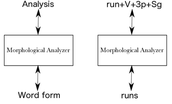
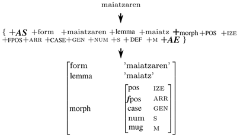
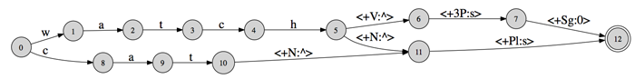
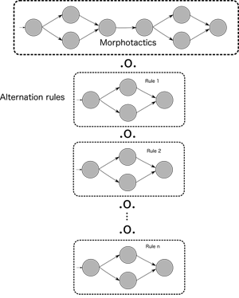
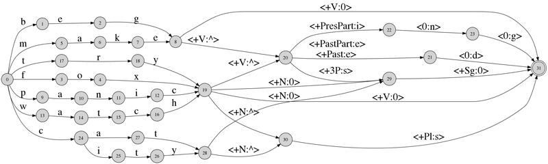
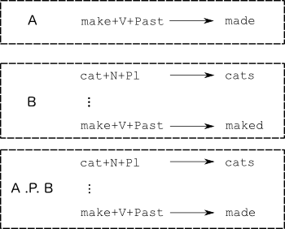

Author: Mans Hulden (2011)
Rescued from now-defunct Google code page
Morphological analysis with FSTs
The following is a brief and basic tutorial on how to construct a morphological analyzer for a language using finite-state techniques. A small toy grammar of English noun and verb inflection is built step-by-step to illustrate overall design issues. While the grammar is small, much larger grammars can be built using the same design principles. Basic familiarity with regular expressions and foma is assumed, such as is outlined in the Getting started with foma page.
Definition
Since a "morphological analyzer" could mean any number of things, let's first settle on a task description and define what the morphological analyzer is supposed to accomplish. In this implementation, a morphological analyzer is taken to be a black box (as in Fig. 1), which happens to be implemented as a finite-state transducer, that translates word forms (such as runs) into a string that represents its morphological makeup, such as run+V+3p+Sg: a verb in the third person singular present tense.

Naturally, if the word form is ambiguous (as runs is), the job of the analyzer is to output all tag sequences consistent with the grammar and the input word. In the above example, the transducer should perhaps also output run+N+Pl, or some similar sequence to convey the possibility of a noun reading of runs. Since finite-state transducers are inherently bidirectional devices, i.e. we can run a transducer in the inverse direction as well as the forward direction, the same FST, once we've built it, can serve both as a generator and an analyzer. The standard practice is to build morphological transducers so that the input (or domain) side is the analysis side, and the output (or range) side contains the word forms.
In real life, morphological analyzers tend to provide much more detailed information than this. Figure 2 shows a more elaborate analyzer's output for Basque with the input work maiatzaren, together with an illustration about how a feature matrix can be recovered from the string output of the analyzer.

The goal is then is build a finite-state transducer that accomplishes this string-to-string mapping of analyses to surface forms and vice versa.
Design
The construction of the final transducer will be broken down into two large components:
- A lexicon/morphotactics part
- A phonological/morphophonological/orthographic part
The lexicon
The first component, which we call the lexicon component, will be a transducer that:
- Accepts as input only the valid stems/lemmas of the language, followed by only a legal sequence of tags.
- Produces as output from these, an intermediate form, where the tags are replaced by the morphemes that they correspond to.
- May produce additional symbols in the output, such as special symbols that serve to mark the presence of morpheme boundaries.
For example, in the analyzer about to be constructed, the lexicon component FST will perform the following mappings:
c a t +N +Pl w a t c h +N +Pl w a t c h +V +3P +Sg (input side) c a t ^ s w a t c h ^ s w a t c h ^ s (output side)
There are two things to note here. The first is that we are using the symbol ^ to mark a morpheme boundary. The second is that while each letter in the stem is represented by its own symbol (w,a,t,c,h, etc.), each complete tag is one separate symbol, a multicharacter symbol (+N, +Pl, etc.) The spaces in the above show the symbol boundaries to illustrate this. Figure 3 shows what a lexicon transducer that only encoded these three words would look like. Naturally, we will have some more features and a larger lexicon in what is described below.

The part that accomplishes this, the lexicon transducer, will be written in a formalism called lexc. While it is possible to construct the lexicon transducer through regular expressions in foma, the lexc-formalism is more suited for lexicon construction and expressing morphotactics.
Alternation rules
The role of the alternation rules is to modify the output of the lexicon transducer according to orthographic, phonological, and morphophonological rules and conventions. So far, for example, we've assumed that English nouns can be pluralized by concatenating the morpheme s with the stem (cat → cats). However, some nouns, those where the stem ends in a sibilant, have the allomorph es (watch → watches). A way to describe the process of forming correct nouns is to always represent the plural as the morpheme s as we have, and then subject these word forms to alternation rules that insert an e only if the stem ends in a sibilant. This, among others, is the task of the alternation rules component: to produce the valid surface forms from the intermediate forms output by the lexicon transducer.
Since alternation rule FSTs that are conditioned by their environment are very difficult to construct by hand, we use the replacement rules formalism in foma to compile the necessary rules into FSTs.
After the necessary replacement rules have been built, we combine the lexicon FST and these various FSTs that encode such alternations as e-insertions, into one large transducer that acts like a cascade: a single transducer that has the same effect as would providing an input word to the lexicon transducer, take its output and feed it into the first rule transducer, take it's output, then feed it into the next rule transducer, and so on.
This is accomplished by the regular expression composition operator (.o.). Suppose we have the lexicon transducer in an FST we've named Lexicon, and the various alternation rules as FSTs named Rule1, ..., RuleN (in reality we might want to use more perspicuous names). Now, we can issue the regular expression:
Lexicon .o. Rule1 .o. Rule2 .o. ... .o. RuleN ;
and produce a single transducer that is the composite of the different rule transducers and the lexicon transducer.
This idea is illustrated in figure 4.

This is indeed one of the main reasons to use finite-state transducers for morphological analysis: the fact that we can describe the word-formation rules in the direction of generation, but in fact use the final FST in the other direction. It would be trivial to write little programs (in one's programming language of choice) to perform the lexicon mapping and the alternation rules mappings, each little program's output being fed as the next program's input, and so provide a model for generation. But with such a model, we generally have no way to perform analysis. The fact that we can calculate the composition of each individual transducer, is what makes this possible.
Although we write the grammar in the direction of generation, we at the same time produce an analyzer, or parser. This is because the final product is represented as one single transducer and transducers operate just as easily in the inverse direction. All the software has to when parsing (applying the transducer in the inverse direction), is to follow the output labels on each transition that correspond to the word to parsed, and output the matching input labels.
The lexicon script
As mentioned, the lexicon script that will be a transducer that maps analysis forms to intermediate forms will be written in the lexc-formalism and stored in a text file, which we call english.lexc. This file can be compiled into a transducer in the main foma interface.
The facts to be modeled
Before moving further, let's narrow down the details we want to capture in our analyzer.
We'll want to include the following noun/verb features into the grammar.
- Nouns: singular (cat) vs. plural (cats)
- Verbs: infinitive (watch), 3rd person singular (watches), past tense (watched), past participle (watched), and present participle (watching)
Tags
We'll also want to use the following tags for marking the above grammatical information.
- +N for nouns
- +V for verbs
- +3P for third person
- +Sg for singular forms
- +Pl for plural forms
- +Past for past tense
- +PastPart for past participle
- +PresPart for present participle
The lexc-script
The lexc-formalism operates under the simple notion of continuation classes. One declares a set of labeled lexicons, the content of those lexicons, and rules which dictate how lexicon entries are to be concatenated.
The entire lexc-script is given further below; here, we provide a line-by-line analysis of it.
First, in the lexc-formalism, we need to declare those symbols that are to be multicharacter strings:
Multichar_Symbols +N +V +PastPart +Past +PresPart +3P +Sg +Pl
Then, we must declare a Root lexicon. The Root lexicon is where we start building a word:
LEXICON Root Noun ; Verb ;
Here we declared a lexicon called Root, and provided it with two entries. Both entries are empty (there is no left-hand side), and by choosing one of these, we can move to either the Noun or the Verb lexicon.
The Noun lexicon looks as follows:
LEXICON Noun cat Ninf; city Ninf; fox Ninf; panic Ninf; try Ninf; watch Ninf;
Here, we have six entries. All of these entries continue to the Ninf lexicon.
LEXICON Verb beg Vinf; fox Vinf; make Vinf; panic Vinf; try Vinf; watch Vinf;
The Verb lexicon also has six entries, and if their continuation lexicon is the Vinf-lexicon for all of them.
LEXICON Ninf +N+Sg:0 #; +N+Pl:^s #;
Now, the Ninf-lexicon has two entries, and unlike in the previous lexicons we've seen, both entries specify the input string and output string separately. For example, the entry +N+Sg:0 specifies that the input side contains +N+Sg and the output side the empty string. The continuation lexicon for both is #, meaning end-of-word. So, for example, if we chose from the Root lexicon to enter the Noun lexicon, and from there chose the cat entry, and in this lexicon chose the +N+Sg:0 entry, we would have constructed the input-output pairing:
c a t +N +Sg c a t
In the Vinf lexicon we have likewise:
LEXICON Vinf +V:0 #; +V+3P+Sg:^s #; +V+Past:^ed #; +V+PastPart:^ed #; +V+PresPart:^ing #;
Here, we have a few more entries, one for each verb form. We also use the morpheme boundary symbol ^, which will be taken advantage of in the triggering contexts by the replacement rules.
In foma we can compile the english.lexc script into a transducer by issuing the read lexc-command.
foma[0]: read lexc english.lexc Root...2, Noun...6, Verb...6, Ninf...2, Vinf...5 Building lexicon...Determinizing...Minimizing...Done! 1.7 kB. 32 states, 46 arcs, 42 paths. foma[1]:
Now, we've added the lexicon transducer on the stack, and can label it for subsequent use:
foma[1]: define Lexicon; defined Lexicon: 1.7 kB. 32 states, 46 arcs, 42 paths. foma[0]:
Figure 5 shows what this lexicon transducer actually looks like.

We can also test it against some words to see that it gives the desired intermediate forms:
foma[0]: regex Lexicon; 1.7 kB. 32 states, 46 arcs, 42 paths. foma[1]: down apply down> watch+V+PastPart watch^ed apply down> city+N+Pl city^s apply down>
Here is the complete lexc-file in one chunk:
!!!english.lexc!!! Multichar_Symbols +N +V +PastPart +Past +PresPart +3P +Sg +Pl LEXICON Root Noun ; Verb ; LEXICON Noun cat Ninf; city Ninf; fox Ninf; panic Ninf; try Ninf; watch Ninf; LEXICON Verb beg Vinf; fox Vinf; make Vinf; panic Vinf; try Vinf; watch Vinf; LEXICON Ninf +N+Sg:0 #; +N+Pl:^s #; LEXICON Vinf +V:0 #; +V+3P+Sg:^s #; +V+Past:^ed #; +V+PastPart:^ed #; +V+PresPart:^ing #;
The alternation rules component
Having accomplished the first part of the grammar construction, we now turn to the alternation rules component. The idea is to construct a set of ordered rule transducers that modify the intermediate forms output by the lexicon component. At the very least we will need to remove the ^-symbol which is used to separate morpheme boundaries before we produce valid surface forms. This will in fact be the last rule transducer in the cascade. Before that rule applies, however, there is a number of rules that are needed for orthographic and phonological adjustment.
The facts to be modeled
e-deletion
Stems that end in a silent e drop the e with certain suffixes (ing and ed in our case). For example, make → making. This can be captured by:
define EDeletion e -> 0 || _ "^" [ i n g | e d ] ;
In other words, applying the rule to the output of the lexicon component, we get changes like:
m a k e +V +PresPart (lexicon input) m a k e ^ i n g (lexicon output) m a k ^ i n g (after e-deletion)
e-insertion
We also have an e-insertion rule: whenever a stem ends in a sibilant and is followed by the plural morpheme s (watch → watches). Sibilants can be defined orthographically by s, z, x, c h, and s h. The rule then looks like:
define EInsertion [..] -> e || s | z | x | c h | s h _ "^" s ;
Note that the above rule will work for the words we've defined in our lexicon. However, the sibilant representation in English orthography is not entirely consistent. For example, a word such as monarch would trigger the rule and incorrectly yield *monarches in the plural. One way to handle such exceptions is to rewrite the c h sequence in the lexicon component with some symbol that will not trigger e-insertion (say K), which is then rewritten back to c h after all the rules have applied.
y-replacement
The y-replacement rule which acts in constructions such as try → tries and try → tried is perhaps best broken into two parts. Consider the corresponding input-intermediate form pairings:
(1) (2) t r y +V +3P +Sg t r y +V +PastPart (lex in) t r y ^ s t r y ^ e d (lex out) t r i e ^ s t r i ^ e d (desired rule output)
Now, in the event that the verb ends in y and is followed by morpheme boundary s (1), we want to change the y into i e, whereas case (2) requires only changing the y into i. We can accomplish this by having two separate rules combined with composition, or as is done below, as two parallel rules:
define YReplacement y -> i e || _ "^" s ,,
y -> i || _ "^" e d ;Note the ,, which separates two distinct parallel rules. These rules are not joined by composition, rather, they operate simultaneously and independently. For this particular case it is of no importance whether the two rules apply simultaneously or one after the other, but for other cases the output may well be different.
k-insertion
Verbs that end in a c (corresponding to a phonological k), add a k before the morpheme boundary if followed by an affix beginning with a vowel. For example panic → panicking, panicked. We can identify quite accurately when the k needs to be inserted as it is preceded by a vowel in those cases (as opposed to, say the verb construction arc → arcing). The rule can then be captured by:
define KInsertion [..] -> k || C V c _ "^" V;
Of course, this rule relies on us having defined V as our set of vowel symbols.
Note the [..]-construction on the LHS. Here, using an epsilon (0) as the left hand side will not do. The rule formalism is such that if a 0 were used on the LHS, we would insert a potentially infinite number of k-symbols. The special construction [..] forces epsilon insertions to restrict themselves to maximally one insertion per potential insertion site.
Consonant doubling (gemination)
Consonant doubling is really the same phenomenon as the k-insertion. We double final consonants in the stem in certain environments: beg → begging, run → runnable, etc. Our lexicon contains only one such word (beg), so we can make do with a simple rule:
define ConsonantDoubling g -> g g || C V _ "^" V;
For a more thorough treatment, we'd also need to add rules for the other consonants. Although, this again is a phenomenon that is not perfectly capturable without additional knowledge as to the pronunciation of the word. The consonant doubling only happens when the final syllable of the stem is stressed. Compare commit → committing and edit → editing. The latter word fulfills the structural requirements of the rewrite rule (a C V sequence before the consonant to be doubled), yet the gemination isn't permitted.
Auxiliary symbol removal
Naturally, as the last rule, we need to remove the auxiliary ^, whose presence has been necessary for the correct definition of the alternation rules. The last rule removes these, after which we've produced valid surface forms:
define Cleanup "^" -> 0;
Compiling the grammar
In the same script that compiles the replacement rules, we also read in the lexc-file, and label it Lexicon, so we can use that label in subsequent regular expressions.
read lexc english.lexc define Lexicon;
Having defined and labeled all the necessary rules and the lexicon, these can be composed by:
regex Lexicon .o.
ConsonantDoubling .o.
EDeletion .o.
EInsertion .o.
YReplacement .o.
KInsertion .o.
Cleanup;Testing the grammar
Having at our disposal the two files english.lexc and english.foma, we can simply run the .foma-file from the interface which will compile the lexicon and the replacement rules and join them all by composition.
foma[0]: source english.foma Opening file 'english.foma'. defined V: 405 bytes. 2 states, 5 arcs, 5 paths. Root...2, Noun...6, Verb...6, Ninf...2, Vinf...5 Building lexicon...Determinizing...Minimizing...Done! 1.7 kB. 32 states, 46 arcs, 42 paths. defined Lexicon: 1.7 kB. 32 states, 46 arcs, 42 paths. defined ConsonantDoubling: 1.1 kB. 11 states, 47 arcs, Cyclic. defined EDeletion: 1.2 kB. 11 states, 52 arcs, Cyclic. defined EInsertion: 1.1 kB. 7 states, 43 arcs, Cyclic. defined YReplacement: 998 bytes. 9 states, 36 arcs, Cyclic. defined KInsertion: 1.9 kB. 12 states, 89 arcs, Cyclic. defined Cleanup: 324 bytes. 1 states, 2 arcs, Cyclic. 2.2 kB. 47 states, 70 arcs, 42 paths. foma[1]:
Now we can test the resulting transducer in the analysis direction:
foma[1]: up apply up> tries try+V+3P+Sg try+N+Pl apply up> panicking panic+V+PresPart apply up> [CTRL-D]
and the generation direction:
foma[1]: down apply down> beg+V+PresPart begging apply down> watch+N+Pl watches apply down>
Here is the complete english.foma-file:
### english.foma ###
# Vowels
define V [ a | e | i | o | u ];
read lexc english.lexc
define Lexicon;
# Consonant doubling: 1-letter consonant doubled before -ing/-ed (beg/begging)
define ConsonantDoubling g -> g g || _ "^" [i n g | e d ];
# E deletion: silent e dropped before -ing and -ed (make/making)
define EDeletion e -> 0 || _ "^" [ i n g | e d ] ;
# E insertion e added after -s, -z, -x, -ch, -sh before s (watch/watches)
define EInsertion [..] -> e || s | z | x | c h | s h _ "^" s ;
# Y replacement: -y changes to -ie before -s, -i before -ed (try/tries)
define YReplacement y -> i e || _ "^" s ,,
y -> i || _ "^" e d ;
# K insertion: verbs ending with vowel + -c add -k (panic/panicked)
define KInsertion [..] -> k || V c _ "^" [e d | i n g];
# Cleanup: remove morpheme boundaries
define Cleanup "^" -> 0;
read lexc english.lexc
define Lexicon
define Grammar Lexicon .o.
ConsonantDoubling .o.
EDeletion .o.
EInsertion .o.
YReplacement .o.
KInsertion .o.
Cleanup;
regex Grammar;Additional testing
We can also list all the input/output pairs of the words with the pairs-command:
foma[1]: pairs cat+N+Sg cat cat+N+Pl cats city+N+Pl cities city+N+Sg city try+V+PastPart tried try+V+Past tried try+V+3P+Sg tries try+N+Pl tries try+V try try+V+PresPart trying try+N+Sg try panic+V panic panic+V+3P+Sg panics panic+N+Sg panic panic+N+Pl panics panic+V+PresPart panicking panic+V+PastPart panicked panic+V+Past panicked watch+V watch watch+V+PresPart watching watch+V+PastPart watched watch+V+Past watched watch+V+3P+Sg watches watch+N+Pl watches watch+N+Sg watch make+V make make+V+3P+Sg makes make+V+PresPart making make+V+PastPart maked make+V+Past maked beg+V beg beg+V+3P+Sg begs beg+V+PresPart begging beg+V+PastPart begged beg+V+Past begged fox+V fox fox+V+PresPart foxing fox+V+PastPart foxed fox+V+Past foxed fox+V+3P+Sg foxes fox+N+Pl foxes fox+N+Sg fox foma[1]:
Here, eyeballing the results, we see that we've made a slight overgeneralization: the surface form maked is incorrect. How to solve this, and other exceptional forms in the grammar, will be addressed below.
Saving the resulting transducer
Having compiled the analyzer/generator transducer, we can also save it into a file with the save stack-command:
foma[1]: save stack english.bin Writing to file english.bin. foma[1]:
For large grammars, loading the binary file format will in general be much faster than recompiling the grammar. However, if we need to make changes to the grammar, recompilation becomes necessary. The binary tranducer format is also necessary to use the analyser/generator with the external utility flookup. This is a simple way (outside of the foma API) to connect a morphological analyzer to other applications.
Running the transducer with the flookup utility
Assuming we've stored the transducer in english.bin, we can also use the generic flookup utility to use the transducer. The flookup utility reads a transducer from a given file, and the reads words from stdin, yielding the transducer output to stdout:
$ echo "begging" | flookup english.bin begging beg+V+PresPart $
By default the flookup applies words in the inverse (analysis) direction of the transducer (as apply up in the foma interface). If we want to generate, we can run flookup with the -i flag.
$ echo "beg+V+PresPart" | flookup -i english.bin beg+V+PresPart begging $
Grammar tweaking: Adding exceptions (irregular forms)
At this point, let's return to the concern about generating the incorrect form maked from make+V+PastPart and make+V+Past. This is clearly not a phonological/orthographic issue that we would want to mend by adding a rewrite rule. Such a rule would only target those particular word forms (which are really exceptions), so we might as well treat it as an exception by listing it as such. There are a couple of options regarding how to model exceptional forms in foma. One straightforward way is to simply list the exceptional forms in the lexicon so that they bypass the replacement rules. Another way is to write a separate mini-grammar for exceptions which is joined together with the main grammar by the union or priority union operations.
Exceptions in LEXC
The way to go about this in lexc is to bypass word formation at a certain point. For example, make is listed as:
make Vinf;
where Vinf is the continuation class that handles all the verb inflection. Now, we could replace this line by:
make+V:make #; make+V+PresPart:making #; make+V+Past:made #; make+V+PastPart:made #;
In effect, this lists all the pairings of make and its analysis to its surface form separately. Note the the continuation lexicon is now # for all these forms, since we need to bypass Vinf altogether as these words no longer need to be affixed with inflectional affixes.
For single words, or a few entries, this method will work fine. For larger projects, it is advisable to write small subgrammars that are combined with the regular grammars through priority union, as is explained below.
Exceptions by priority union
Priority union (.P.) is a special operation that works exactly like regular union (|) in most cases. That is, if we have two mappings A and B, A .P. B will perform the mapping that either A or B would. However, the priority union of A and B, as opposed to regular union, additionally discards those relations from B that have a corresponding input in A. This idea can be used to combine two grammars, an 'exception' grammar and a 'regular' grammar. Fig. 6 illustrates the approach.

In other words, if we had an 'exceptions' transducer that only contained the irregular form mappings, we could combine this with the regular transducer as follows.
define Exceptions [[{make} "+V" "+Past" .x. {made}] | [{make} "+V" "+PastPart" .x. {made}]] ;
regex Exceptions .P. Grammar ;Grammar tweaking: adding exceptions (parallel forms)
Although the grammar above does not include words that have parallel or alternate forms, the need to accommodate such words is typical. In English, for example, we may have a need to be able to parse latinate or greek plural forms alongside the regular anglicized forms in words such as cactuses/cacti, indexes/indices, formulae/formulas.
Parallel forms in LEXC
If we had an entry for cactus in the above Noun lexicon, the regular form would of course be produced correctly by the grammar as-is:
... cactus Ninf; ...
To also produce the alternate form cacti, we can again hard-wire this into the lexc definition; however, this time without removing the regular entry:
... cactus Ninf; cactus+N+Pl:cacti #;
Now, the regular entry cactus with the continuation class Ninf handles the regular pluralization, while we've also listed an irregular one, which is not followed by any continuation class but by end-of-word (#).
Parallel forms with union
Similar to the exceptional forms, we can also construct a separate grammar containing alternate forms, and then union in this grammar with the main, regular, grammar. Assuming we've defined our irregular mappings in `ParallelForms, we can easily produce the union by ParallelForms | Grammar`. For the simple example above of including cacti as a parallel form, we could issue:
define ParallelForms [c a c t u s %+N %+Pl .x. c a c t i ]; regex ParallelForms | Grammar ;
assuming of course we've already defined Grammar (as is done in english.foma).
Including both parallel and exceptional forms
In many cases, we will build separate subgrammars for the exceptional forms and the parallel forms. These can be combined with the main grammar using both union and priority union. Assume we've defined the Grammar, ParallelForms and Exceptions. In the example below, we will provide simple definitions of these for the sake of illustration, but these subgrammars themselves can in actual applications be fairly elaborate and contain their own lexc-code and replacement rules, just like the main grammar:
define ParallelForms [c a c t u s %+N %+Pl .x. c a c t i ];
define Exceptions [[{make} "+V" "+Past" .x. {made}] | [{make} "+V" "+PastPart" .x. {made}]] ;Now, we can combine the two with the main grammar as follows:
regex Exceptions .P. [Grammar | ParallelForms] ;
Advanced: long-distance dependencies and flag diacritics
In some cases, we need to model long-distance dependencies between morphemes - something that is not easy to do in the lexc-formalism. Flag diacritics offer a way to perform long-distance dependency checks during word formation.
English morphology has few (if any) truly general long-distance dependencies, but to have a concrete example to illustrate the technique with, let's consider the following verbs and deverbal adjectives:
undrinkable+Adj unpayable+Adj undoable+Adj drinkable+Adj payable+Adj doable+Adj *undrink+V+Inf *unpay+V+Inf undo+V+Inf
To write a lexc-grammar that captures everything (except the two forms we have deemed ungrammatical), we could presumably do something like the following skeleton:
Multichar_Symbols +V +Inf +Adj +Pl UN+
LEXICON Root
Prefix;
LEXICON Prefix
UN+:un Verb;
Verb;
LEXICON Verb
do Vinf;
drink Vinf;
pay Vinf;
LEXICON Vinf
able Adjinf;
+V+Inf:0 #;
LEXICON Adjinf
+Adj:0 #;
+Adj+Pl:s #;The script now generates all 3*6 = 18 combinations of:
VERB VERB+able VERB+ables un+VERB un+VERB+able un+VERB+ables
To address the two wordforms that shouldn't be allowed (*undrink and *unpay) the first problem is that, somehow, the Vinf-lexicon should be aware if the UN+ prefix had been selected from the prefix lexicon and in that case force the selection of able to disallow *undrink, for example. This is tricky to manage in a clean way in the continuation-class formalism of lexc. The second problem is that we don't want this restriction to apply in the case of doable. Both of these restrictions can be accomplished by the use of flag diacritic symbols placed into the grammar which gives a more fine-grained control over co-occurrence.
Flag diacritics to control co-occurrence
Flag diacritics are "invisible" symbols that allow one to express constraints between disjoint parts of words. All flag symbols in a grammar are of the following format:
- `@FLAGTYPE.FEATURE.VALUE@
The flag values and features are arbitrary strings, and up to the user to decide. During application of a transducer, the runtime of foma will decide whether or not a word is to be accepted depending on which flags co-occur in the same word. A good way to handle co-occurrence problems is generally to drop suitable flags by certain morphemes, which then prevents them from combining, but leaving the flags invisible to the user.
The different flag types are
- U unify features @U.FEATURE.VALUE@
- P positive set @P.FEATURE.VALUE@
- N negate @N.FEATURE.VALUE@
- R require feature/value @R.FEATURE.VALUE@ or @R.FEATURE@
- D disallow feature/value @D.FEATURE.VALUE@ or @D.FEATURE@
- C clear feature @C.FEATURE@
- E require equal feature/values @E.FEATURE.VALUE@
We will not use all of the flag types here, and restrict ourselves only to a few, namely positive (P), clear (C), and disallow (D) which set a value to a feature, clear a feature, and disallow a feature to have certain (or any) values, respectively.
The functioning of flags is best illustrated through an example. Let's add some flags to the previous lexc-script:
Multichar_Symbols +V +Inf +Adj +Pl UN+ @P.UN.ON@ @D.UN@ @C.UN@
LEXICON Root
Prefix;
LEXICON Prefix
@P.UN.ON@UN+:@P.UN.ON@un Verb;
Verb;
LEXICON Verb
@C.UN@do Vinf;
drink Vinf;
pay Vinf;
LEXICON Vinf
able Adjinf;
@D.UN@+V+Inf:@D.UN@ #;
LEXICON Adjinf
+Adj:0 #;
+Adj+Pl:s #;Note the following things:
- We declared the flags together with the other multi-character symbols
- We put a @P.UN.ON@-flag on the un-prefix
- We put a @D.UN@-flag on the infinitive
- We put a @C.UN@-flag on the do-lemma
- We put the flags on both sides (the upper side, and lower side), and made sure they lined up by putting them first in the string whenever we had upper:lower entry pairs.
The flags in this grammar interact as follows to capture the phenomena we require:
- do gives the value ON to the feature named UN (@P.UN.ON@), (positive set)
- the bare infinitive disallows the feature UN to have any value @D.UN@ (disallow)
Now, this leads to that, even though lexc generates the combination
@P.UN.ON@unpay@D.UN@
the apply runtime sees that the feature UN was first set, and later in the same string disallowed to have any value, thus blocking this word [we could have used @D.UN.ON@ just as well: this would have disallowed UN to have the specific value ON whereas we disallowed any value at all by @D.UN@.] This gets us almost everything, with the exception that we want to allow undo, unlike the two other un-VERB combinations. That is handled by the @C.UN@-flag, which clears any value the feature UN may have. In other words, for that particular combination, lexc generates:
@P.UN.ON@un@C.UN@do@D.UN@
And in this case, the runtime flag-watcher has no problem accepting it because the feature UN was cleared before it was disallowed.
If you load this file in foma, it will actually still say it accepts 18 paths:
Root...1, Prefix...2, Verb...3, Vinf...2, Adjinf...2 Building lexicon...Determinizing...Minimizing...Done! 1.2 kB. 21 states, 27 arcs, 18 paths.
However, doing a lower-words will only print out 16 - those words that are accepted.
Flag commands
If you want to see the flags in the output, you can issue:
set show-flags ON
And now, lower-words or upper-words gives something like:
@P.UN.ON@un@C.UN@do@D.UN@
Foma can also calculate the equivalent transducer without the flags present by eliminate flags
foma[1]: eliminate flags 1.3 kB. 26 states, 32 arcs, 16 paths.
And now we see that after the flags have been purged and an equivalent FST calculated, the number of paths has been reduced to 16, since they are no longer part of the FST at all.
If you want the foma apply commands to disregard flag constraints, say for debugging purposes, you can also issue the command:
set obey-flags OFF
Flags and replacement rules
A common trap with using flag diacritics is to forget that they are actual symbols in the transducers. This often manifests itself in the design of replacement rules. Consider a rule like:
b -> p || _ .#. ;
This rule changes b to p at the end of a word. Now, if the word is designed with a flag-bearing grammar, it may actually look like:
blab@U.SOMEFEATURE.SOMEVALUE@
although the flag is never seen when the strings are printed. In this case the rule will not apply. There are two easy remedies for this:
- Make rules flag-aware:
b -> p || _ ("@U.SOMEFEATURE.SOMEVALUE@") .#. ;or
- Issue the command set flag-is-epsilon ON in the foma interface before composing the lexicon with the replacement rules.
The following general guidelines should help to steer clear of trouble with flag diacritics:
- Declare all flags as Multicharacter_Symbols in lexc.
- Make sure the flags are both on the upper and lower side in lexc, aligned. Put the flag first (before the morpheme) in a lexc entry, and on both sides of the colon if the entry is two-level.
- Use set show-flags ON when debugging.
- Make sure the replacement rules take the flag symbols into account.